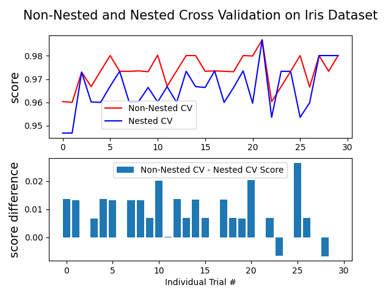

Note
Go to the end to download the full example code or to run this example in your browser via Binder
Nested versus non-nested cross-validation¶
This example compares non-nested and nested cross-validation strategies on a classifier of the iris data set. Nested cross-validation (CV) is often used to train a model in which hyperparameters also need to be optimized. Nested CV estimates the generalization error of the underlying model and its (hyper)parameter search. Choosing the parameters that maximize non-nested CV biases the model to the dataset, yielding an overly-optimistic score.
Model selection without nested CV uses the same data to tune model parameters and evaluate model performance. Information may thus “leak” into the model and overfit the data. The magnitude of this effect is primarily dependent on the size of the dataset and the stability of the model. See Cawley and Talbot [1] for an analysis of these issues.
To avoid this problem, nested CV effectively uses a series of
train/validation/test set splits. In the inner loop (here executed by
GridSearchCV), the score is
approximately maximized by fitting a model to each training set, and then
directly maximized in selecting (hyper)parameters over the validation set. In
the outer loop (here in cross_val_score), generalization error is estimated
by averaging test set scores over several dataset splits.
The example below uses a support vector classifier with a non-linear kernel to build a model with optimized hyperparameters by grid search. We compare the performance of non-nested and nested CV strategies by taking the difference between their scores.
Average difference of 0.007581 with std. dev. of 0.007833.
import numpy as np
from matplotlib import pyplot as plt
from sklearn.datasets import load_iris
from sklearn.model_selection import GridSearchCV, KFold, cross_val_score
from sklearn.svm import SVC
# Number of random trials
NUM_TRIALS = 30
# Load the dataset
iris = load_iris()
X_iris = iris.data
y_iris = iris.target
# Set up possible values of parameters to optimize over
p_grid = {"C": [1, 10, 100], "gamma": [0.01, 0.1]}
# We will use a Support Vector Classifier with "rbf" kernel
svm = SVC(kernel="rbf")
# Arrays to store scores
non_nested_scores = np.zeros(NUM_TRIALS)
nested_scores = np.zeros(NUM_TRIALS)
# Loop for each trial
for i in range(NUM_TRIALS):
# Choose cross-validation techniques for the inner and outer loops,
# independently of the dataset.
# E.g "GroupKFold", "LeaveOneOut", "LeaveOneGroupOut", etc.
inner_cv = KFold(n_splits=4, shuffle=True, random_state=i)
outer_cv = KFold(n_splits=4, shuffle=True, random_state=i)
# Non_nested parameter search and scoring
clf = GridSearchCV(estimator=svm, param_grid=p_grid, cv=outer_cv)
clf.fit(X_iris, y_iris)
non_nested_scores[i] = clf.best_score_
# Nested CV with parameter optimization
clf = GridSearchCV(estimator=svm, param_grid=p_grid, cv=inner_cv)
nested_score = cross_val_score(clf, X=X_iris, y=y_iris, cv=outer_cv)
nested_scores[i] = nested_score.mean()
score_difference = non_nested_scores - nested_scores
print(
"Average difference of {:6f} with std. dev. of {:6f}.".format(
score_difference.mean(), score_difference.std()
)
)
# Plot scores on each trial for nested and non-nested CV
plt.figure()
plt.subplot(211)
(non_nested_scores_line,) = plt.plot(non_nested_scores, color="r")
(nested_line,) = plt.plot(nested_scores, color="b")
plt.ylabel("score", fontsize="14")
plt.legend(
[non_nested_scores_line, nested_line],
["Non-Nested CV", "Nested CV"],
bbox_to_anchor=(0, 0.4, 0.5, 0),
)
plt.title(
"Non-Nested and Nested Cross Validation on Iris Dataset",
x=0.5,
y=1.1,
fontsize="15",
)
# Plot bar chart of the difference.
plt.subplot(212)
difference_plot = plt.bar(range(NUM_TRIALS), score_difference)
plt.xlabel("Individual Trial #")
plt.legend(
[difference_plot],
["Non-Nested CV - Nested CV Score"],
bbox_to_anchor=(0, 1, 0.8, 0),
)
plt.ylabel("score difference", fontsize="14")
plt.show()
Total running time of the script: (0 minutes 3.692 seconds)